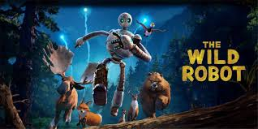

The Wild Robot is a 2024 American animated science fiction adventure film produced by DreamWorks Animation and distributed by Universal Pictures. Based on the 2016 novel of the same name by Peter Brown, it was written for the screen and directed by Chris Sanders and features the voices of Lupita Nyong'o, Pedro Pascal, Kit Connor, Bill Nighy, Stephanie Hsu, Mark Hamill, Catherine O'Hara, Matt Berry, and Ving Rhames. The film follows Roz (Nyong'o), a service robot shipwrecked on an uninhabited island who must adapt to her surroundings, build relationships with the local wildlife, and become the adoptive mother of an orphaned goose, Brightbill
The Wild Robot premiered at the 49th Toronto International Film Festival on September 8, 2024, and was released in the United States on September 27. The film received acclaim for its story, animation, depth, musical score and vocal performances, particularly from Nyong'o, Pascal and Connor,[5][6] and was a commercial success, grossing over $274.1 million worldwide against a production budget of $78 million. A sequel is in development.Sanders first encountered the original book through his daughter and years later was offered an opportunity to direct a film adaptation at DreamWorks. The film uses a hand-painted aesthetic, inspired by classic Disney animated films and the works of Hayao Miyazaki. It was the final film to be animated entirely in-house at DreamWorks, as the studio will begin relying heavily on outside vendors for future films. Kris Bowers composed the score, marking his first score for an animated film.
Read More